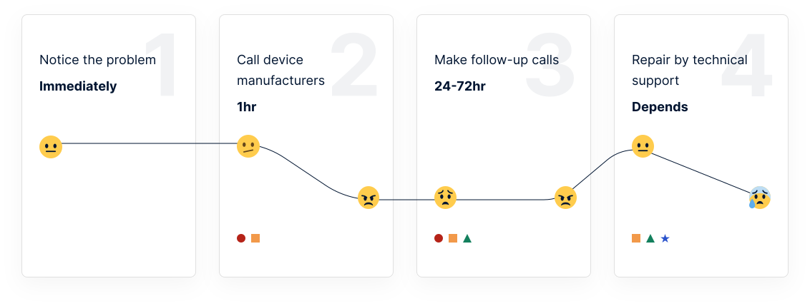
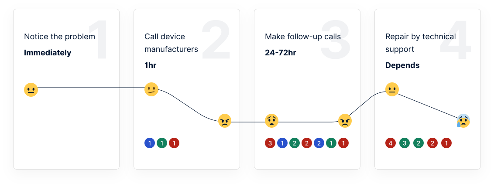
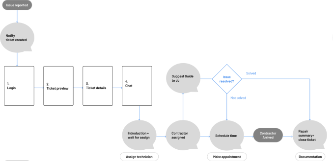
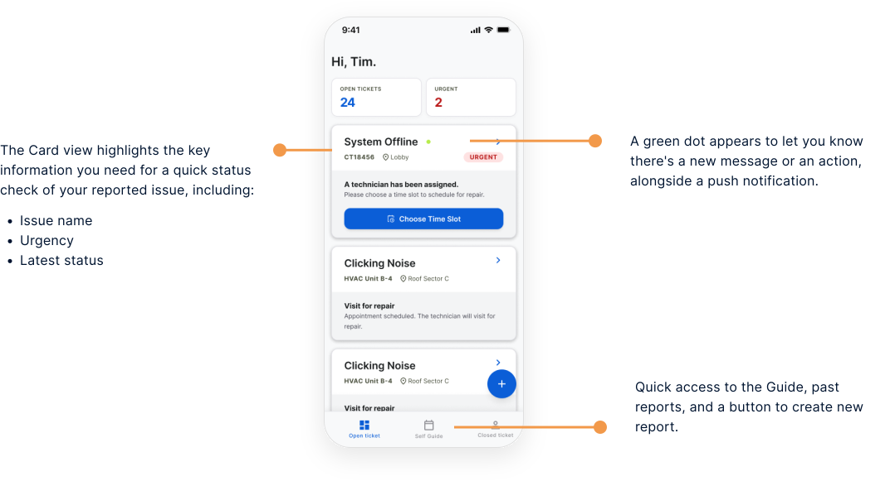
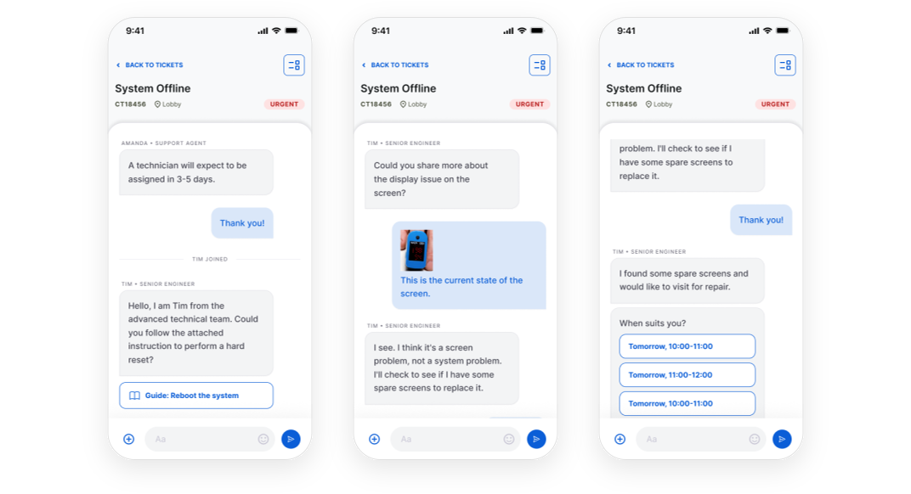

PHILIPS · 2023
Helpbot —
Accelerate medical hardware maintenance
Empower Biomedical Engineers to diagnose, track, and resolve medical equipment maintenance issues, minimizing hospital downtime and eliminating support queues.


Challenge
BioMeds are trapped in low-visibility support queues, directly risking hospital operational efficiency.
Biomedical Engineers (BioMeds) maintain critical diagnostic hardware (e.g., MRI, CT scanners, patient monitors). When equipment fails, BioMeds face severe friction. Legacy phone-only dispatch channels lead to prolonged Mean Time to Repair, missed SLAs, and unnecessary field technician dispatches for minor issues that could be triaged or resolved locally.
Discovery
Talking to the people stuck in the queue
I reviewed related resources and spoke with several BioMeds to learn how they currently manage medical device repair issues.
- 1.What is an average day like for a biomedical engineer?
- 2.Describe the process you're having today when reporting an issue to the manufacture company and time the stages.
- 3.Which are the problems you usually turn to the manufacture company? How often?
- 4.Did you have more than one problem at the same time?
- 5.How satisfied were you from the process? Why?
Based on these insights, I mapped the existing repair process into a user flow and highlighted the time required at each step. Some recurring points mentioned in the previous research were:
- Call is the only way to reach out to the customer service
- Long waiting time, especially when they're facing an urgent problem
- Lack of visibility with the maintenance process
- Some of issues can be solved by BioMeds themselves if they are well-guided

The points result in a sense of psychological distress and discomfort that affect satisfaction towards the maintenance process. Based on these, I conclude three aspects I need to focus on in this challenge: Coping unknown, Time, and Communication.
Goal
Transform maintenance into a transparent, automated workflow that prioritizes issues, reduces repair time, and keeps BioMeds informed at every stage.
Ideation
Design for the Psychology of Waiting
Apply the Psychology of Waiting (David Maister, 1985) to reduce anxiety and active cognitive load during equipment downtime.
-
Unexplained
Justifiable explanations will soothe the waiting customer.
-
Uncertain
Uncertain waits are longer than known, finite waits.
-
Unfair
No visible order to the waiting line will give the feeling that somebody has successfully ‘cut in front’ of you.
-
People want to get started
People perceive the initial wait as longer because they don’t know whether staff have forgotten them yet.
-
01
How might we make the process certain?
-
02
How might we make the waits to be known and finite?
-
03
How might we make the conversation seamless?
In the final solution, based on three aspects I need to consider: Coping unknown, time, communication. I identified potential solutions and mapped them to the user flow, showing where each one addresses a specific pain point.
Coping unknown
A lack of visibility into the repair process and expected timeline can leave uncertainty and frustration throughout the maintenance.
- 1A clear follow-up at each step, direct and personal communication.
- 2A brief explanation of waits lowers the stress (e.g. too many requests, transportation problems).
- 3A brief explanation of the issue, including ways to help diagnose or deal with it if it can be done by BioMeds themselves.
- 4Presenting an estimated time will help them cope better with the coordination of schedules.
Time
Not every issue requires a technician. Enabling BioMeds to resolve simple problems remotely can significantly reduce waiting time.
- 1Quicker way to reach out to customer service and technical support.
- 2Approaches such as push and chat make BioMeds better use of their time and shorten the process — they can respond quickly and focus on something else, rather than checking on their phone.
- 3Resolving issues via a troubleshooting guide saves unnecessary time.
Communication
Clear communication keeps everyone aligned, reducing misunderstandings, incorrect diagnoses, and wasted time.
- 1A chat view is familiar to users, clear, faster, and more coherent. The conversation is also stored in one place and visible by both sides.
- 2Using all possible means to effectively identify the problem leads to effective diagnosis and conversation, such as taking pictures or a diagnosis check.

In order to create a system where BioMeds can easily interact with the manufacturer company and engage in the process, I researched chatbots and gathered data on their usage. I also wrote down the features and components I thought users would need, then sketched the whole flow.
68%
of consumers have neutral or positive experiences with chatbots.
87.2%
of consumers like chatbots when contacting brands because they provide instant response and answer simple questions.
64%
of businesses believe that chatbots will allow them to provide a more customized customer experience.

Flow: an issue is reported and a ticket is created. The BioMed logs in, previews the ticket, reviews the ticket details, and opens the chat. A guide is suggested. If the issue is resolved, the ticket is closed with a repair summary. If not, the BioMed gets an introduction and waits for assignment, a contractor is assigned, a time is scheduled, the contractor arrives, and the ticket is closed with documentation and a repair summary.
Solution
Starting screen

Track different states of reported issue
All of the messages will be recorded in the app, which can be seen in the “overview” section of each ticket. The status mentioned in the card will change according to the step in the process, helping the user track progress right from the main menu.

Report screen & Chat timeline
Having all the professionals in one place helps save waiting time, as it allows all parties to add pictures, videos, and documents to the chat.
